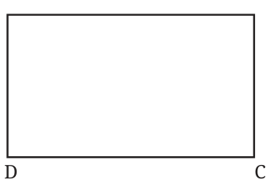
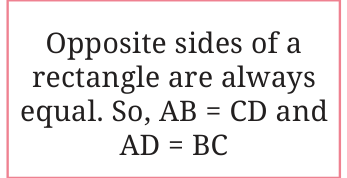
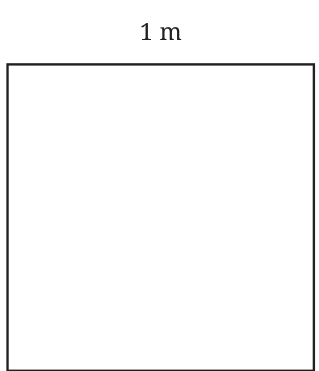

Consider a rectangle ABCD whose length and breadth are 12 cm and 8 cm, respectively. What is its perimeter?
Perimeter of the rectangle = Sum of the lengths of its four sides
\(= AB + BC + CD + DA\)

Opposite sides of a rectangle are always equal. So, AB = CD and AD = BC
\(= AB + BC + AB + BC\)
\(= 2 \times AB + 2 \times BC\)
\(= 2 \times (AB + BC)\)
\(= 2 \times (12 \text{ cm} + 8 \text{ cm})\)
\(= 2 \times (20 \text{ cm})\)
\(= 40 \text{ cm.}\)

From this example, we see that —
Perimeter of a rectangle = length + breadth + length + breadth.
Perimeter of a rectangle \(= 2 \times\) (length + breadth).
The perimeter of a rectangle is twice the sum of its length and breadth.
